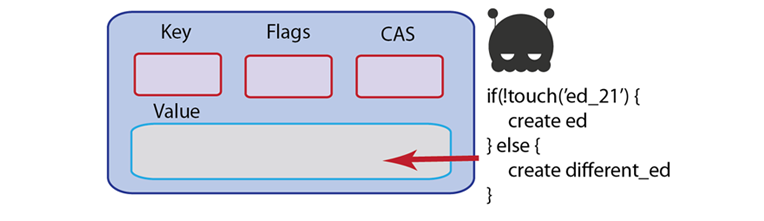
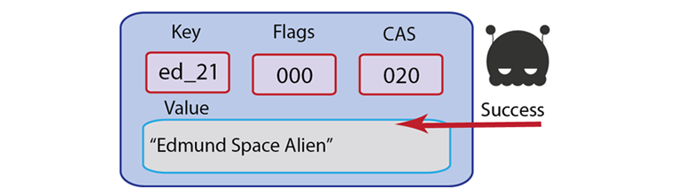
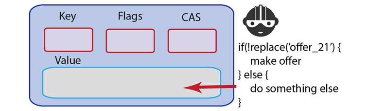
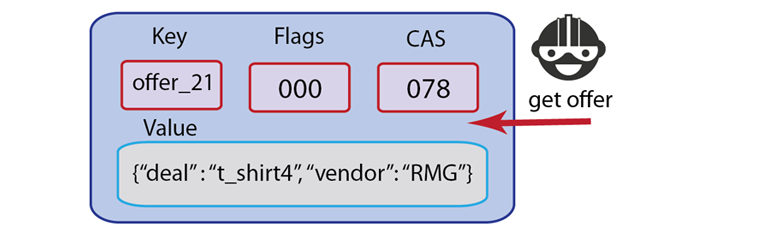
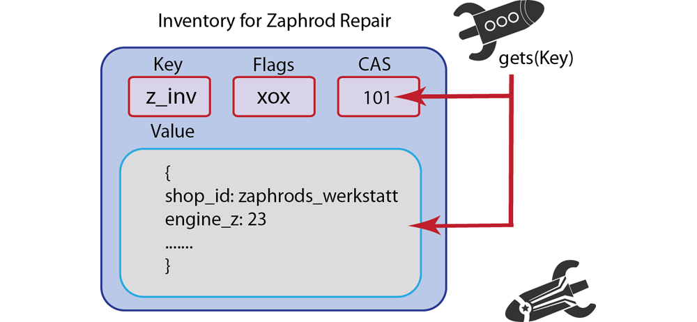
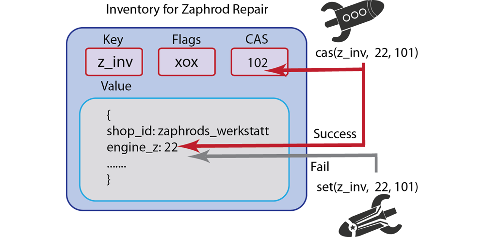
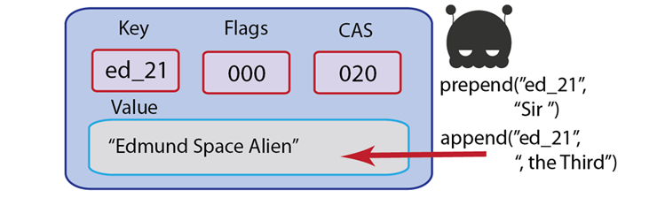
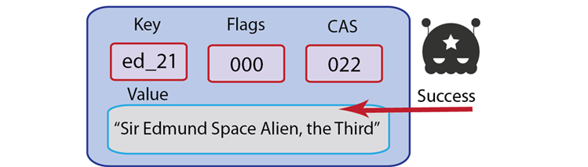
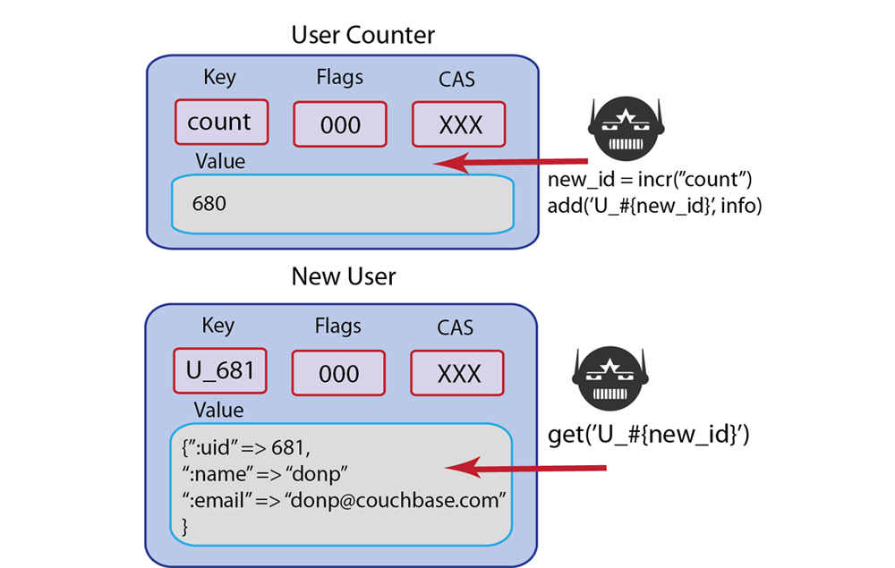

Updating Information
Update operations are used for replacing, updating, deleting or modifying a stored numerical value through increment or decrement. This includes compare and swap (CAS) operations, which enable you to perform optimistic concurrency in your application. All update operations exist for all SDKs provided by Couchbase. For some languages, parameters, return values, and data types may differ.
For more information about connections and connection-level settings, see Optimizing client instances and Client-side timeouts.
Touch
With the touch method you can update the expiration time on a given key. This can be useful for situations where you want to prevent an item from expiring without resetting the associated value. For example, for a session database you might want to keep the session alive in the database each time the user accesses a web page without explicitly updating the session value, keeping the user’s session active and available.
The other context when you might want to use touch is if you want to test if a key actually exists. As we mentioned earlier for our discussion of get, developers will typically rely on get to determine if a key exists. The unintended problem this can cause is if the value for a key is several megabytes instead of mere bytes. If you constantly use get only to test if a key exists, you nonetheless retrieve the entire value; this can cause a performance loss if the value is large, and especially if you perform the get over thousands or millions of documents.
Using touch as an alternative way to test if a key exists may be a preferable. Since touch only updates the expiration and does not retrieve the item value, the request payload and response are both small. The most important drawback to be aware of is that when you use touch to determine if a key exists, you assume that the key does not have an expiration time that is used in other parts of your application. If the expiration time for a key is important, when you use touch it will overwrite that expiration and will impact application behavior. If you are certain the key expiration is not important, than using touch in this context is safe.
The other drawback of using this approach is that if you perform a touch to determine if a key exists, you are working on the assumption that it will not expire by the time you perform your next operation on that key. If you only want to test for the existence of a key, and you do not want to update the expiration, you can provide the existing expiration, or set it to 0, which indicates no expiration. The following illustrations demonstrate how you can use the result from touch to decide whether you store a key, or store an alternate key:
 The following shows and example of using touch in the Ruby SDK:
# updates the expiration time to 10 seconds for 'foo' document
c.touch("foo", :ttl => 10)
As we discussed earlier in this chapter, the SDKs provide a convenience method you can use to retrieve a document and update the expiration. With these so called get-and-touch operations you do not need to perform a separate setting operation to update expiration when you are retrieving the document. This will also provide better performance compared to doing a separate get and touch requests. If you use separate calls to get and touch you will create two requests to Couchbase Server and two responses from the server per document; in contrast you create only one request and response when you use a get-and-touch method.
The equivalent call in the memcached protocol is touch which updates the item expiration. For more information, see memcached protocol.
As we mention previously, you can perform a touch to explicitly test whether a key exists or not, and then create a key; you can try this with set or add. If a key is missing, Couchbase Server will return a ‘key not found’ type error which you can check. Be aware that when you use this approach, you are assuming the key will not expire before you perform your next operation on it.
If the key is missing and you did not expect this result, you should check any application logic that creates that type of key, or any logic that deletes it may inadvertently cause this result. Another reason why you might get this result is that the item expired and Couchbase Server deleted it as part of the regular maintenance. So you will want to check any logic that sets an explicit expiration set for that key.
The types of errors that can occur during this operation include 1) inability to connect to a node, or 2) some error exists while attempting to format a value being retrieved. If you have a connection-level error you may need to reattempt connection, and possibly check the status of the server. If you have an error with the size of your value or formatting, you need to check the value itself, and how it is encoded and see if there are any issues that make the document incompatible with Couchbase Server.
Replace
This method will update the value for a key, if the key already exists. If the key does not exist, it will fail and return an error. Replace is useful in cases where you do care whether or not a key exists, for instance, your application logic will perform one action if a key exists, but perform another action if the key does not exist. This method is roughly analogous to a UPDATE command in SQL.
For instance, going back to a game application example, imagine you want to show new users a special offerings page with a variety of new games. In this case you could have a document in Couchbase Server which stores last login times for users. When a new user initially logs in, your application tries to replace the last login document with the current time, but it receive an error that the key does not exist. Your application would then know that the key does not exist because this is the first user login and could then show the special offer page.
 Some Couchbase Server developers prefer to exclusively use replace anytime they update documents. With this approach you will know whether the key exists or not prior to updating it; using replace will return error information if the key is missing which you can handle in your application logic.
In Couchbase SDKs you can update the value with replace while simultaneously updating the document expiration.
Here is a simple example of replace in Ruby:
c.replace("foo", "bar")
This will replace the value for the key foo with the new string ‘bar’; if the key does not exist, it will return a ‘key not found’ error. The following example demonstrates use of replace in PHP:
$script_access_count=$cb_obj->get($script_name);
$cb_obj->replace("DATE::" . $script_name,date("F j, Y, g:i:s a "));
In this example we use the replace to update the latest access date and time for a server script. We update the date and time using a standard PHP date format.
The equivalent call in the memcached protocol is replace ; for more information, see memcached protocol.
If a key does not exist, you will receive ‘key not found’ type error. If you receive this error and you expected it to exist, you should check your application logic to see why it does not exist. Any logic that creates that type of key, or any logic that deletes it may inadvertently cause that error. Another reason why you might get this error is that the item expired; once a key is expired Couchbase Server will return a ‘key not found’ error in response to a replace request. So you will want to check any explicit expiration set for that key.
One option to handle this error is to create the value if it does not already exist. After you receive an error that the value could not be replaced, you can attempt an add to create the key.
The types of errors that can occur during this operation include 1) inability to connect to a node, or 2) some error exists while attempting to format a value being set. If you have a connection-level error you may need to reattempt connection, and possibly check the status of the server. If you have an error with the size of your value or formatting, you need to check the value itself, and how it is encoded and see if there are any issues that make the document incompatible with Couchbase Server.
Compare and swap (CAS)
This operation enables you to update information only if a unique identifier matches the identifier for the document you want to change. This identifier, called a CAS value or ID, prevents an application from updating values in the database that may have changed since the application originally obtained the value.
A compare and swap operation will allow only the user with the latest CAS value to update a key. This assures you that if you get a key, and someone has changed it in the meantime, you can not change the value. Essentially the first process that accessed the document with the most current CAS value will be able to update it. When this update occurs, Couchbase Server also updates the CAS value. All other requests at this point will be sending the old, invalid CAS values.
Providing optimistic concurrency is optional in your application. All documents you create in Couchbase Server automatically have a CAS value stored as part of metadata for the document. To use it for optimistic concurrency, you include get-with-cas and compare and swap operations in your application logic as well as provide CAS values as parameters to these methods.
CAS values are in the form of 64-bit integers and they are updated every time a value is modified; if an application attempts to set or update a key/value pair and the CAS provided does not match, Couchbase Server will return an error.
For instance, imagine we want to have a repair station for our spaceship game. Players who suffer damage to their ships must go there occasionally or they cannot travel or defend themselves. However, we do not want the repair station to have an unlimited supply of spaceship replacement parts on inventory. In this example, we have a document to represent the types of spaceship parts the repair station carries, and the amounts it has in inventory.
By requiring CAS values in this scenario, we only update the inventory and provide it to a ship if we have the most current CAS value for the inventory document. If another ship has come and taken the part in the meantime, it will change the CAS value for inventory, we fail to get the part with our current CAS value and receive an error.
Typically we would perform a get-with-cas call in order to retrieve the current inventory of repair parts and the CAS value for the inventory. If the part we need is in inventory, we would use the CAS value to update our inventory document to show one less part.
By using the CAS value we will ensure that our spaceship either gets the part given our current CAS value, or needs to check inventory again because another ship has already taken one of the parts. In this scenario performing get-with-cas and then a cas call to update the inventory will ensure that our reduction of inventory occurs in an orderly fashion, and that spaceships can only remove inventory when they have the right to do so by providing the correct CAS value.
Should you choose to enforce CAS values for a certain type of key or set of application data, you should retrieve the keys and store the CAS value returned by get-with-cas. Anytime you want to update one of these keys, you should do so as a cas operation.
To be able to perform a cas update you not only need the key for a document, you will also need the CAS value in order to successfully update it. In this case you could also store the CAS value returned when the value was originally created and then perform a cas operation. In most cases however, you would find it easiest to use get-with-cas to retrieve the CAS for a given key, and then perform your compare and swap. In.Net, the method that retrieves a value and CAS value for a given key is called GetWithCas.
The following is an example of a cas operation using pseudo-code:
attempts_left = 10;
loop {
cas, val = Get("aKey");
new_value = updateValue(val);
result = ReplaceWithCAS("aKey", new_value, cas);
if (result == success) {
break; # YAY, success
}
if (result.error == EXISTS_WITH_DIFFERENT_CAS) {
--attempts_left;
if (attempts_left == 0) {
throw("Failed to update item 'aKey' too many times, giving up!")
}
continue;
}
throw("Unexpected error when updating item 'aKey': ", result.error);
}
The first part of our loop retrieves the CAS value and value and then changes the value. We then try to update the value in Couchbase Server as a cas operation. If the result object sent back by Couchbase Server is success we break, if it is a ‘key exists’ error, we make additional attempts to update the value until attempts_left is 0. At this point we throw and exception and exit the loop.
If you perform a CAS operation and the CAS value has been changed by another process, you will get ‘key exists’ error. How you handle this error depends on the value you are trying to update. You can try again to get the key and when you get the value, actually compare the part you want to change with the value you expected. It is possible that another process made an update, but it did not update the part of the value you are interested in changing. In this case the other process will release the key with a cas operation. You can then perform another get to retrieve the new CAS value and content, then examine the content. Here is the general sequence you could follow:
-
Perform a get-with-cas to retrieve the CAS value for a key,
-
Try a cas with the CAS value. If you fail,
-
Perform a get-with-cas again to get the new CAS value, and compare the part of the value with the content you expected,
-
If the part of the value is still intact, try to perform cas again with your updated content and the new CAS value.
When you try this approach, you might want to limit the number of times you re-attempt a get-with-cas and the number of times you will try to check and update the content.
The equivalent call in the memcached protocol is set with a CAS value provided. For more information, see memcached protocol.
The only other types of errors you can typically experience with cas are issues with the new value you provide, such as formatting. The other error is that a key that is truly missing, which you should have discovered when you first performed a get-with-cas to retrieve the CAS value.
The types of errors that can occur during this operation include 1) inability to connect to a node, or 2) some error exists while attempting to format a value being stored. If you have a connection-level error you may need to reattempt connection, and possibly check the status of the server. If you have an error with the size of your value or formatting, you need to check the value itself, and how it is encoded and see if there are any issues that make the document incompatible with Couchbase Server.
Appending and prepending information
With append and prepend methods, you can add information to the start or end of a binary data that already exists in the data store. Both of these methods, along with the incrementing and decrementing methods, are considered ‘binary’ methods since they operate on binary data such as string or integers, not JSON documents. These methods can add raw serialized data to existing data for a key. The Couchbase Server treats an existing value as a binary stream and concatenates the new content to either beginning or end.
Both append and prepend are atomic operations; this means that multiple threads can be appending or pre-pending the same key without accidentally overwriting changes from another append/prepend request. Note however that the order in which Couchbase Server appends or prepends data is not guaranteed for concurrent append/prepend requests.
Non-linear, hierarchical formats in the database will merely have the new information added at the start or end. There will be no logic which adds the information to a certain place in a stored document structure or object.
Therefore, if you have a serialized object in Couchbase Server and then append, or prepend, the existing content in the serialized object will not be extended. For instance, if you append an integer to an Array stored in Couchbase, this will result in the document containing a serialized array, and then the serialized integer.
Similarly, if you have JSON document with nested attributes, when you prepend and append, the new data will appear either before or after the entire JSON object, but not within the JSON object, nor any nested attributes in the JSON.
Deserialization of objects that have data appended or prepended may result in data corruption, due to the behavior previously described.
Both append and prepend originated from the request that Couchbase Server supports ‘lists’ or sets. Developers wanted to maintain documents representing the latest 100 RSS feeds, or the latest 100 tweets about a certain topic, or hash-tag. At this point, you can use it to maintain lists, but be aware that the content needs to be a binary form, such as strings or numeric information.
In the chapter on more advanced development topics, we provide an example on managing a data set using append ; we provide the sample as a Python script. For more information about optimizing method calls, see Using the fastest methods. You can also view the entire blog post about the topic from Dustin Sallings at the Couchbase blog, Maintaining a Set.
For purposes of this introduction to prepending and appending with Couchbase SDKs, we offer these illustrations to show how the two methods work. Imagine we are running an intergalactic empire, and we decide to knight/dame numerous users. We have also improved our document-keeping system and we want to enable users to have suffixes:
 Notice that we provide the appropriate spacing and since the two methods are separate Couchbase Server requests, Couchbase Server updates the CAS value two times. Be aware that in some SDKs you may provide prepend and append with a CAS value as a parameter in order to perform the operation; however no SDK requires it.
The next example demonstrates use of append in Ruby. Note in this case, providing a CAS value is optional. If provided however, it will raise an error if the given CAS value does not match the CAS value of the stored document:
#simple append operation and get
c.set("foo", "aaa")
c.append("foo", "bbb")
c.get("foo") #=> "aaabbb"
#append using CAS option
ver = c.set("foo", "aaa")
c.append("foo", "bbb", :cas => ver)
#simple prepend
c.set("foo", "aaa")
c.prepend("foo", "bbb")
c.get("foo") #=> "bbbaaa"
The following examples demonstrates append and prepend in Java. In this case the get-with-cas operation in Java is gets :
/* get cas value for sample key and then append string */
CASValue<Object> casv = client.gets("samplekey");
client.append(casv.getCas(),"samplekey", "appendedstring");
/* handling possible errors using return value of append */
OperationFuture<Boolean> appendOp =
client.append(casv.getCas(),"notsamplekey", "appendedstring");
try {
if (appendOp.get().booleanValue()) {
System.out.printf("Append succeeded\n");
} else {
System.out.printf("Append failed\n");
}
} catch (Exception e) {
...
}
/* prepend a string to an existing value */
CASValue<Object> casv = client.gets("samplekey");
client.prepend(casv.getCas(),"samplekey", "prependedstring");
The most significant error developers can make with prepend and append is that they repeatedly use the method and create a value that is too large for Couchbase Server. When append and prepend add content to a document, they do not remove the equivalent amount of content, such as removing the oldest item from a list when new list content is added.
Therefore you can quickly reach the limit of data allowed for a document if you do not keep track of it as you prepend or append. The limit for values is 20MB so if you repeatedly use these two methods, you may receive an error from the server as well as inconsistent results. When you start getting these errors you need to go back to your application logic, determine how often you are actually triggering an append and prepend for the document. The three possible approaches, which can be used simultaneously are:
-
Change Methods Used: Instead of using append/prepend use a set or add and additional programming logic to add the new content, but also remove old content. This will maintain a more constant document size and reduce oversized documents.
-
Reduce Use: Reduce the number times you are appending and pre-pending, or reduce the amount of information you add to the document.
-
Split Documents: To avoid documents that are too large, logically separate the documents. For instance, instead of one document for set of tweets on Etsy products, break it up into several documents on different types of Etsy products, or tweets occuring during different time periods.
-
Compaction: In this case we explicitly remove data from a document if it makes sense to remove the data. This helps us avoid documents that are too large. For more information and an example implementation, view the entire blog post about the topic from Dustin Sallings at the Couchbase blog, Maintaining a Set.
Be aware that for Couchbase SDKs, if you try to append or prepend a different data-type to an existing key, an SDK may perform no data cast, but rather overwrite the entire value with the new value. For instance this Ruby example shows an overwrite and cast:
c.set('karen', 'karen') #returns cas value for 'karen'
c.get('karen').class #returns String
c.prepend('karen', 2) #returns new cas value
c.get('karen').class #Fixnum
The equivalent memcached protocol calls are append and prepend. These are the methods for appending and prepending; for more information see, memcached protocol.
If you encounter a data type or generally data you did not expect, refer back to the methods that create your keys, as well as prepend or append them. Confirm that you provide the data as a consistent data-type.
If a key is missing, you will get a ‘key does not exist’ error in response. If you did not expect this result, you should check any application logic that creates that type of key, or any logic that deletes it may inadvertently cause this result. Another reason why you might get this result is that the item expired and Couchbase Server returns a ‘key not found’ type error. So you will want to check any logic that sets an explicit expiration set for that key.
The other error that can occur when you are prepending or appending is if you provide a bad value, such as a newline, or invalid character. Check the value you want to use with either of these methods so that it is valid.
The types of errors that can occur during this operation include 1) inability to connect to a node, or 2) some error exists while attempting to format a value being stored. If you have a connection-level error you may need to reattempt connection, and possibly check the status of the server. If you have an error with the size of your value or formatting, you need to check the value itself, and how it is encoded and see if there are any issues that make the document incompatible with Couchbase Server.
Incrementing and decrementing values
These methods can increment or decrement a value for a given key, if that value can be interpreted as an integer value. Couchbase Server requires that the value be an ASCII number to be incremented or decremented
Both of these methods are atomic; this means that multiple threads can be incrementing/decrementing a key without conflicting with other threads that are also incrementing or decrementing the value. Note however that if concurrent threads make a request to increment or decrement a value, there is no guarantee on which thread will change a value first.
The operations are provided as convenience methods for scenarios where you want to have some sort of counter; they eliminate the need for you to explicitly get, update and then reset an integer document through separate database operations.
The primary use for these the incr method is to increment a counter, typically to represent the number of page visits. Generally they can be used for any scenario where you have a frequently updated counter. For instance, if you have a coupon with a limited number of redemptions, you could store the redemptions as a separate key, and decrement the redemptions each time someone uses the coupon.
There are several other uses for incr that enable you to create unique keys be incrementing a value. Here are some suggested uses:
-
Provide an index for individual items such as comments, users, products, and other lists of items that grow considerably.
-
Generate keys based on an atomic counter, and use that key as a reference to other documents in Couchbase.
For instance, you can use incr to create a unique user id for a system. First you would need a document that represents the counter. In Ruby we could do this:
c = Couchbase.new # => setup default connection
c.set("user::count", 0)
Then you would increment the counter each time you store a new user to the system and store the new counter value as part of the unique key for the new user:
# increment the counter-id and assign to user id
new_id = c.incr("user::count")
# store the counter-id as a self-reference
user_hash = {
:uid => new_id,
:username => "donp",
:firstname => "Don",
:lastname => "Pinto"
}
# create the document with the counter-id and hash
c.add("user::#{new_id}", user_hash)
The entire process would be as follows, if you imagine we want to create a unique user id for a spaceship game. In this case we increment the user count, and then apply it to the new key for the user:
Both incr and decr are considered ‘binary’ methods in that they operate on binary data, not JSON documents. Because of this, keys used by incr and decr cannot be queried or indexed with Couchbase Server.
The next example demonstrates use of incr to identify documents with unique ids and retrieve them with the id:
# initialize the counter
c = Couchbase.new # => setup default connection
c.set("user::count", 0) # => initialize counter
First we create a new Couchbase client instance and create a new document which represents the counter. then we increment the counter each time we create a new user in Couchbase Server:
# retrieve the latest (so you see incr adds one...)
c.get("user::count") # => 3
# increment the counter-id
new_id = c.incr("user::count") # => new_id = 4
# store the counter-id as a reference to the new user
user_hash = {
:uid => new_id,
:username => "jsmith",
:firstname => "John",
:lastname => "Smith"
}
# create the document with the counter-id as key and hash as value
c.add("user::#{new_id}", user_hash) # => save new user, with document key = "user::4"
We first start by retrieving the current counter, to find out the most recently used number for current users. Then we increment the counter by one and store this new count to new_id which we will use as part of the new key. Finally we add the new user document.
If we want to retrieve the newest user to the system, we can use the latest counter document and use that in the key we retrieve:
# retrieve the latest
latest_user = c.get("user::count") # => latest_user = 4
# retrieve the document with the index
user_info = c.get("user::#{latest_user}") # => retrieve user document
# outputs { "uid" => 4, "username" => "jsmith", "firstname" => "John", "lastname" => "Smith" }
puts user_info
The memcached protocol equivalents for this method are incr and decr which are the commands for incrementing and decrementing. For more information about the underlying protocol, see memcached protocol.
Couchbase Server returns no specific operation-level error objects when you perform this operation. If a key does not exist, incr and decr at the SDK-level will create the new key and initialize it with the value you provide, or set the default of 0. As demonstrated above, if you try to increment a negative number, Couchbase Server will return an integer overflow number. If you try to decrement so the result is a negative number, Couchbase server will return 0.
The types of errors that can occur during this operation include 1) inability to connect to a node, or 2) some error exists while attempting to use a key being stored. If you have a connection-level error you may need to reattempt connection, and possibly check the status of the server.